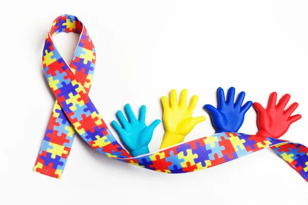

Formas de celebrar com respeito e visibilidade

O Dia do Orgulho Autista é uma oportunidade para promover inclusão, escuta ativa e valorização da neurodiversidade. Aqui estão algumas ideias de como celebrar:
- Compartilhe conteúdo produzido por autistas em redes sociais.
- Use a imagem do infinito colorido e explique seu significado.
- Participe ou organize rodas de conversa sobre o tema.
- Vista roupas coloridas ou adereços que simbolizem o orgulho autista.
- Escute histórias reais de autistas, seja presencialmente ou online.
Ideia extra!
Monte um mural com desenhos, frases ou depoimentos de pessoas autistas da sua escola ou comunidade. Dê visibilidade a essas vozes!